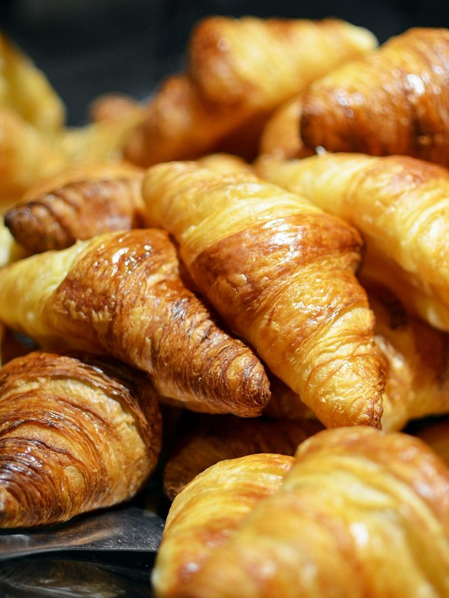
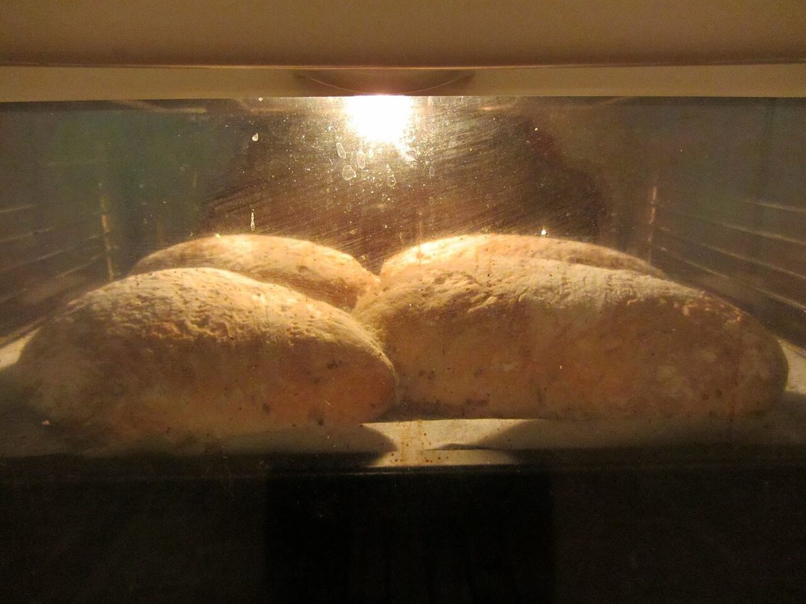

パン屋 / 新潟県妙高市
Pain pour
新潟県妙高市田口にあるパン屋「Pain pour」のご案内ページです。営業時間やメニューなど、詳しいことは準備中。まずはInstagramをのぞいてみてください。

制作側の連想
「pour」のあとに続く言葉を、黒板に書く
店名の由来は分かりません。制作側は、フランス語で「〜のために」を表す前置詞として知られる「pour」と、パンを意味する「pain」の並びから、「Pain pour ○○」という一行を連想しました。そこでこのサイトは、黒板に書いた「pour」の続きを5ページ分、空欄から埋めていく作りにしています。制作側の連想で、お店の理念・由来とは無関係です。
黒板の五行
pourの続きを選ぶ
黒板に貼った写真(イメージ)
パンの写真を、六枚。
写真はお店や妙高市のものではありません。国外・撮影地不明のフリー素材です。




ご案内
お店のこと(確認できたものだけ)
| 所在地 | 新潟県妙高市田口307-6 |
|---|---|
| 電話 | なし |
| 営業時間 | 準備中 |
| 定休日 | 準備中 |
| ご予約 | 準備中 |
| 駐車場 | 準備中 |
| SNS | Instagram @pain.pour |